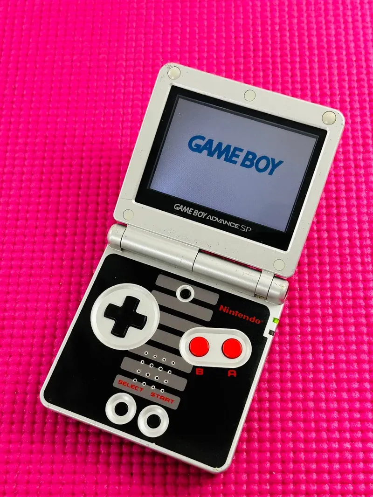

2003 年发布
Game Boy Advance SP
翻盖背光革命 · GBA最畅销改版 · 可充电锂电池
4287万
全球销量
32位
ARM CPU
240×160
屏幕分辨率
¥12,500
首发价格(日元)
📖 历史与背景
2003年2月14日，任天堂在日本发布Game Boy Advance SP——这是对初代GBA最大痛点的直接回应。初代GBA最大的问题是屏幕没有背光，在室内光线不足时几乎看不清画面，被玩家戏称为「手电筒掌机」。
GBA SP采用了翻盖式（clamshell）设计，不仅保护了屏幕，还大幅缩小了携带体积。最关键的改进是加入了前光屏幕（AGS-001型号），玩家终于可以在任何光线条件下清晰游戏。2004年推出的AGS-101型号进一步升级为真正的背光屏幕，画质提升显著。
GBA SP还首次在Game Boy系列中引入了内置可充电锂电池，告别了购买AA电池的时代。充电接口为专用DC接口，约3小时充满，续航约10小时（开前光）至18小时（关前光）。
⚙️ 硬件规格
CPU
ARM7TDMI 32位 (16.78MHz)
屏幕
2.9寸 240×160 TFT
背光
AGS-001前光/AGS-101背光
电池
内置锂电池（约10-18小时）
设计
翻盖式（clamshell）
兼容
GB/GBC/GBA全部游戏
重量
约143g
尺寸
82×84.9×24.3mm（折叠）
🎮 经典游戏阵容
宝可梦 绿宝石
2004 · RPG
GBA宝可梦第三世代完结篇
火焰纹章：圣魔之光石
2004 · 战棋
GBA火纹第三作，双主线
恶魔城：晓月圆舞曲
2003 · 动作
GBA恶魔城系列巅峰之作
塞尔达传说：缩小帽
2004 · 动作冒险
Capcom开发，GBA塞尔达正统作
黄金太阳：失落的时代
2002 · RPG
黄金太阳系列第二部
逆转裁判3
2004 · 法庭冒险
成步堂龙一三部曲完结篇
马力欧与路易吉RPG
2003 · RPG
马力欧兄弟RPG新系列开篇
最终幻想Tactics Advance
2003 · 战棋
FFT掌机版，伊瓦利斯世界观
🏆 市场表现与影响
- 全球销量：4287万台，占GBA系列总销量的52%，是GBA家族中最畅销的型号
- AGS-001 vs AGS-101：初版AGS-001使用前光（frontlight），光线从屏幕前方照射；2004年推出的AGS-101使用真正的背光（backlight），画面明亮鲜艳，二手市场价格远高于AGS-001
- 设计影响：翻盖+背光的设计奠定了此后NDS、3DS系列的基础，直到Switch才回归一体式设计
- 中国玩家记忆：GBA SP是2000年代中国学生群体中最梦寐以求的掌机之一，烧录卡（EZ Flash等）让盗版游戏大行其道
💡 趣闻与冷知识
- GBA SP的「SP」代表「Special」——但在玩家圈中常被戏称为「Screen Protected」（屏幕保护）或「Special Price」（特价）
- AGS-001的前光实际上是一块半透明导光板，在屏幕前方均匀分布光线——技术上叫「侧入式前光」，和真正的背光有本质区别
- GBA SP的充电接口与NDS不兼容——NDS改用了不同的充电口，这意味着两台机器的充电器不能通用
- 日本曾推出过GBA SP的「Famicom Color」限定版——红金配色致敬FC红白机，目前二手价极高
- GBA SP的耳机接口需要通过专用转接线使用——充电口和耳机口共用一个接口，设计颇为反人类